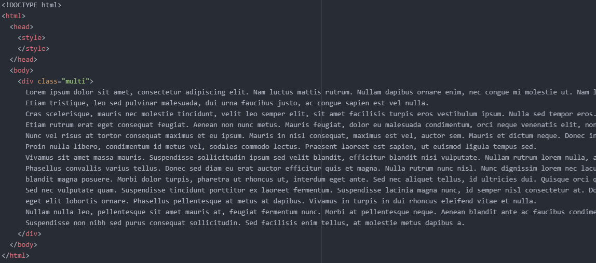
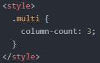
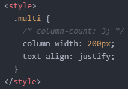
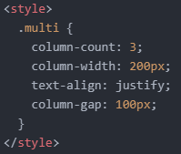
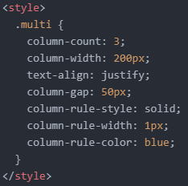
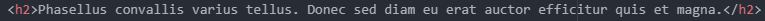
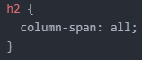

- '다단(Multi column) 레이아웃'에 대해 알아보기
오늘은 '다단(Multi column) 레이아웃'에 대해 알아보려고 합니다.
신문을 보면 각각의 기사가 수많은 열로 나누어져 있는 것을 알 수 있습니다.
이때 쓰이는 레이아웃이 바로 '다단 레이아웃'입니다.
이 레이아웃을 구현하는 방법은 간단합니다.
우선, 다음과 같이 텍스트가 아주 긴 코드를 작성합니다.
위 상태에서 텍스트에 'column-count: 원하는 열 수;'를 선언하면 됩니다.
저는 다음과 같이 'column-count: 3;'을 선언했습니다.
그럼 위와 같이 가독성이 좋지 않았던 문장이 3개 열로 구분되는 것을 알 수 있습니다.
더하여, 'text-align: justify;'를 선언해 주면 아래와 같이 텍스트가 더 깔끔하게 정렬됩니다.
여기서 화면의 크기를 줄여보면, 화면 사이즈가 아무리 작아져도 3개의 열을 유지하는 것을 알 수 있습니다.
다음과 같이 말이죠.
이처럼 'column-count' 속성으로 열을 나눌 수도 있지만, 'column-width' 속성으로도 열을 나눠줄 수 있습니다.
'column-count' 속성은 잠시 주석으로 처리하고 'column-width' 속성을 적용해 보겠습니다.
다음과 같이 코드를 작성합니다.
'column-width: 200px;' 선언은 각각의 열의 너비를 200px로 지정하겠다는 뜻입니다.
다음과 같이 말이죠.
여기서 화면의 크기를 줄여보면, 특정 화면 사이즈까지는 200px의 너비를 유지하지만 더 이상 화면 사이즈를 커버할 수 없을 땐 하나의 열로 합쳐지게 됩니다.
아래와 같이 말이죠.

이번에는 'column-count' 속성과 'column-width' 속성을 동시에 적용시켜보겠습니다.
아까 주석 처리했던 'column-count' 속성을 다시 활성 시켜주세요.
이때는 너비와 상관없이 최대 3개의 열을 만들 수 있게 됩니다.
그리고 위에서 각각의 속성을 따로 적용했을 때의 특징들이 함께 나타나게 됩니다.
화면의 크기를 줄여보면, 처음에는 3개의 열을 유지하다가 어느 순간부터 두 개의 열로 합쳐지고 결국엔 하나의 열로 합쳐지게 됩니다.
다음과 같이 말이죠.

위 세 가지 방법 중 마음에 드는 방법을 선택하여 사용하시면 됩니다.
그 다음으로는 열 사이사이의 간격을 조정해 보려고 합니다.
이때 필요한 속성은 'column-gap' 속성입니다.
저는 다음과 같이 열 사이사이의 간격을 100px로 지정했습니다.
그럼 위와 같이 열 사이사이의 간격이 100px만큼 벌어지는 것을 알 수 있습니다.
그런데 열 사이사이가 비어있어 뭔가 허전한 느낌입니다.
'column-rule-style' 속성을 이용하면 열 사이사이에 선을 삽입할 수 있습니다.
이때 여러 속성값들이 있는데 저는 실선을 적용해 보겠습니다.
아, 동시에 선의 너비와 색상도 지정할 수도 있는데 이때는 'column-rule-width' 속성과 'column-rule-color' 속성을 적용하면 됩니다.
저는 1px과 파란색을 선택했습니다.
해당 코드와 그 결과는 아래와 같습니다.
(열 사이사이의 간격을 100px에서 50px로 조정했습니다.)
참고로, 'column-rule: solid 1px blue'와 같이 코드를 작성해도 무방합니다.
여기서 만약 다음과 같이 문장 중간에 제목을 넣어주면 어떻게 될까요?
그럼 위와 같이 자연스럽게 다른 텍스트와 어울리게 될 겁니다.
그런데 여기서 제목을 'column' 속성의 영향에서 벗어나도록 할 수 있습니다.
그러기 위해선 다음과 같이 코드를 작성하면 됩니다.
이렇게 '다단 레이아웃'에 대한 설명은 마무리하겠습니다.
이를 응용한 예제가 있는데, 이는 영상으로 남겨두겠습니다.
그럼 내일도 화이팅!